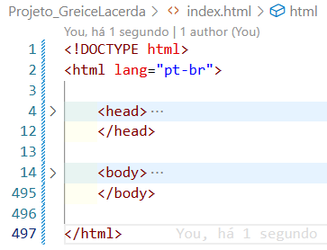

Inserção de Figuras

Fig 1. Exemplo de organização semântica que discutiremos.
Materiais de Apoio (HTML)
Módulo 2: Estilização com CSS (Cascading Style Sheets)
O CSS é a "pele" e a "roupa" da nossa página. Discutiremos como selecionar elementos HTML e aplicar
estilos (cores, fontes, layouts) a eles.
Principais Conceitos de Estilização
Seletores (Classes, IDs, Tags)
O "Box Model" (Margin, Border, Padding, Content)
Layout com Flexbox e Grid
Design Responsivo (Media Queries)
Transições e Animações básicas
Materiais de Apoio (CSS)
Módulo 3: Interatividade com JavaScript
O "cérebro" do nosso site. Vamos focar em como o JavaScript pode manipular o HTML/CSS e executar
lógica,
com foco em nossas aplicações matemáticas e de dados.
Foco: Funções para Aplicações Práticas
Manipulação do DOM (getElementById, querySelector)
Eventos (addEventListener - cliques, submissões)
Variáveis, Funções e Estruturas de Controle (if, for)
Objetos e Arrays (Para estruturar dados de jogos e formulários)
Módulo 4: IA, Geração de Código e Refatoração
Neste módulo, discutiremos como usar ferramentas modernas de IA (como GitHub Copilot, Gemini, etc.)
como
assistentes de programação. O foco será em acelerar o desenvolvimento, depurar de forma inteligente
e, o
mais importante, refatorar nosso código para que seja mais limpo e eficiente.
Tópicos Principais (A IA como Assistente)
Geração de código "boilerplate" (estruturas repetitivas) em HTML e CSS.
Criação de funções JavaScript a partir de descrições (Prompts).
Refatoração de Código: Pedir à IA para otimizar, limpar ou explicar funções
complexas.
Depuração (Debugging): Usar a IA para analisar erros e sugerir correções.
Geração de documentação e comentários de código.
Ética e Boas Práticas: Entendendo os limites e a importância da validação humana.
Nosso primeiro projeto completo. Aplicaremos HTML (estrutura), CSS (design) e JavaScript (lógica).
Usaremos também as técnicas de IA para nos ajudar a depurar e refatorar.
Módulo 6: Projeto 2 - Implementação Web (GitHub Pages & API Google Sheets)
Vamos aprender a publicar nosso site gratuitamente com o GitHub Pages e a usar o JavaScript
(fetch) para se conectar a uma API externa, usando o Google Sheets como um banco de dados
simples.
Módulo 7: Projeto 3 - Construção de um Mathlet Web (Conjunto)
Nosso projeto final. Usando todo o conhecimento (HTML, CSS, JS, API, e IA para refatoração),
construiremos colaborativamente um "Mathlet" — uma aplicação web interativa para explorar um conceito
matemático.